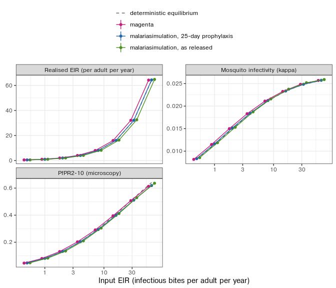
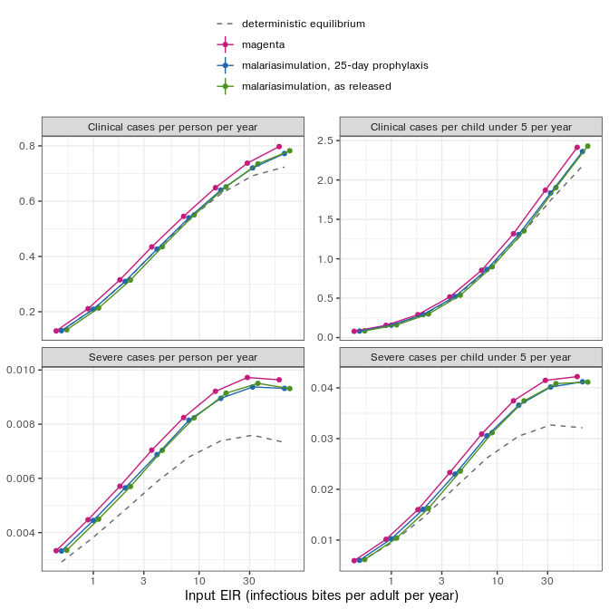
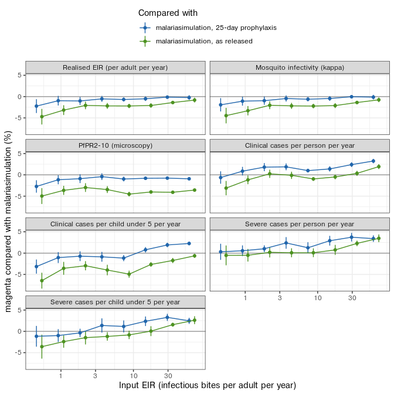
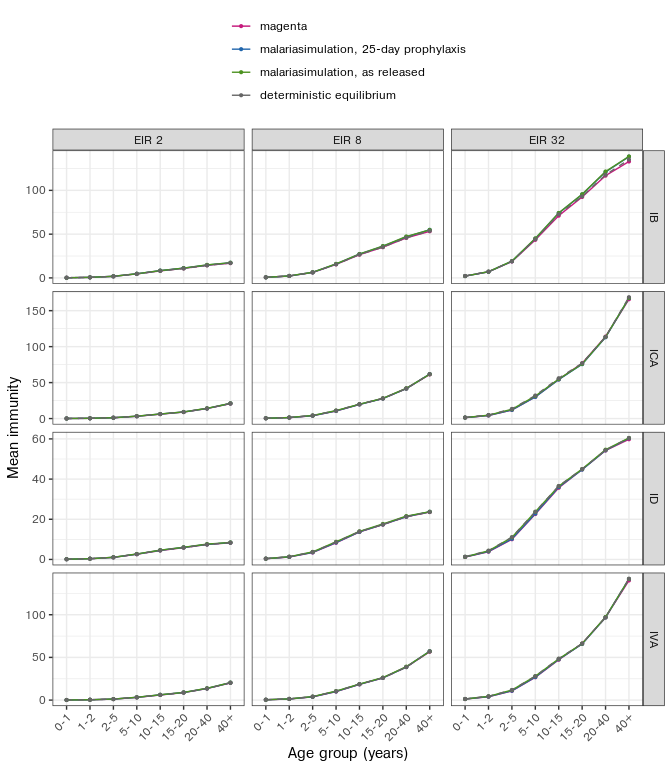
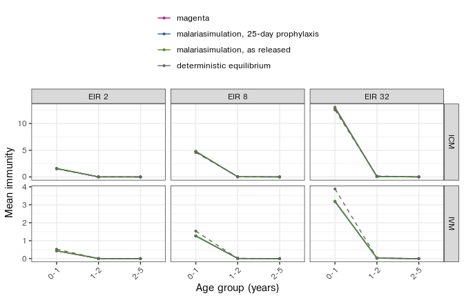
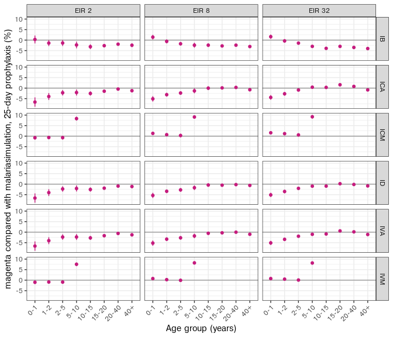
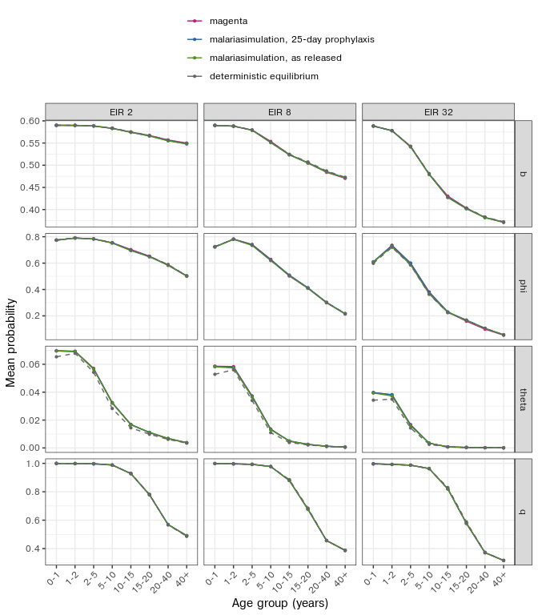
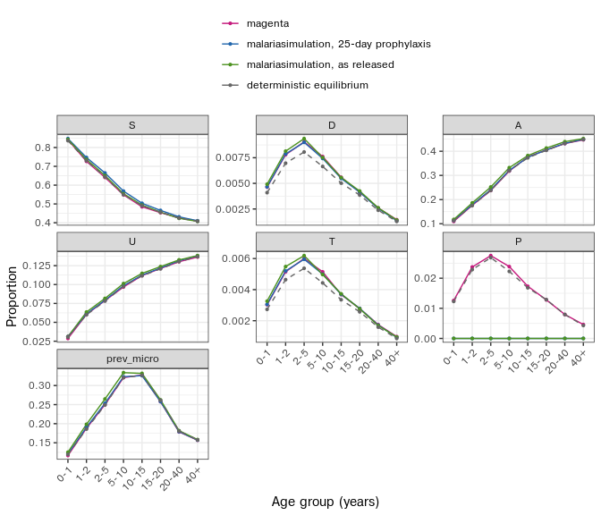

vignettes/Equivalence.Rmd
Equivalence.Rmdmagenta and malariasimulation
are both individual-based versions of the Griffin et al. model of P.
falciparum transmission, and both start from its deterministic
equilibrium. Given the same EIR and the same treatment they should give
the same transmission, prevalence, incidence and immunity. This vignette
compares them across a range of transmission intensities, and is the
place to rerun the comparison after changes to the transmission or
immunity code.
Where the results come from. The runs take up to an hour each (240 tasks), so they were run once on a cluster rather than when this vignette is built, and the code below only reads their saved output. Everything used is in
vignettes_src/equivalence/in the package repository:
run_equivalence.Rsets up the cluster, runs all the tasks and the deterministic reference, and writes the summary toequivalence_summary.rds, which is read below;funs.Rhas the magenta and malariasimulation run functions, which also record the mean immunity, infection state and probability of infection, clinical and severe disease of each age group, and the deterministic reference;analysis.Rhas the function that summarises the saved runs.
The models are run in matched perennial settings:
ft = 0.4), with a drug
that always clears infection, as magenta has no drug
failure unless resistance is modelled, and no treatment of non-malarial
fevers,The models start from their equilibrium, but malariasimulation takes 3 to 4 years to settle, so all outputs are averaged over years 4 to 10. The uncertainty intervals are the mean plus or minus 1.96 standard errors across the 10 runs.
There are three models compared to magenta:
magenta, as in the deterministic model,
treated people are protected from reinfection for 25 days on average.
malariasimulation’s default drug protects for about 10 days, so here its
protection is set to be exponential with a mean of 30.5 days from
treatment (5 days in treatment, then 25 days).malariasimulation rounds a few of the published parameters
(e.g. b0 0.59 rather than 0.590076), so these are set to
magenta’s values. The two models then differ in how severe
cases are counted (magenta sums each person’s probability
of severe disease, malariasimulation draws them), and in biting
heterogeneity: each person in magenta has their own
relative biting rate, drawn from a log-normal distribution, while
malariasimulation puts people into 5 biting groups.
library(malariasimulation)
FT <- 0.4
mpl_default <- magenta::model_param_list_create()
malsim_params <- function(eir, N, p25 = FALSE) {
r <- list(human_population = N)
# align malariasimulation to magenta's parameter values
mp <- mpl_default
r$average_age <- 1 / mp$eta; r$du <- 1 / mp$rU; r$cd <- mp$cD; r$cu <- mp$cU
r$ct <- mp$cT; r$ad <- mp$aD; r$b0 <- mp$b0; r$ib0 <- mp$IB0; r$kb <- mp$kB
r$ub <- mp$uB; r$phi0 <- mp$phi0; r$phi1 <- mp$phi1; r$uc <- mp$uCA
p <- get_parameters(r)
# a drug that always clears infection
al <- AL_params
al[1] <- 1
# 25 days of prophylaxis after the 5 days of treatment, as in magenta
if (p25) {
al[3] <- 1
al[4] <- 30.5
}
p <- set_drugs(p, list(al))
p <- set_clinical_treatment(p, 1, 1, FT)
set_equilibrium(p, eir)
}magenta is run with pipeline(), saving the
state every 73 days so the immunity of each person can be summarised
over time.
library(magenta)
out <- pipeline(EIR = eir, N = 1e5, years = 10, ft = FT, num_loci = 2,
seed = seed, update_save = TRUE, update_length = 73,
update_save_func = save_fn)The full run functions, which also record the mean immunity,
infection state and probability of infection, clinical and severe
disease of each age group, are in
vignettes_src/equivalence/funs.R.
library(ggplot2)
res <- readRDS("equivalence/equivalence_summary.rds")
res$meta[c("magenta_version", "malariasimulation", "N", "reps", "years",
"window_years")]
## $magenta_version
## [1] "1.4.0"
##
## $malariasimulation
## [1] "v3.0.0"
##
## $N
## [1] 1e+05
##
## $reps
## [1] 10
##
## $years
## [1] 10
##
## $window_years
## [1] 4 10
model_labels <- c(magenta = "magenta",
malariasimulation_p25 = "malariasimulation, 25-day prophylaxis",
malariasimulation = "malariasimulation, as released",
deterministic = "deterministic equilibrium")
model_colours <- setNames(c("#c51b7d", "#2166ac", "#4d9221", "grey40"),
model_labels)
bands <- c("0-1", "1-2", "2-5", "5-10", "10-15", "15-20", "20-40", "40+")
tidy <- function(d) {
d$model <- factor(model_labels[d$model], levels = model_labels)
if ("band" %in% names(d)) d$band <- factor(d$band, levels = bands)
d
}
headline <- tidy(res$headline)
immunity <- tidy(res$immunity)
states <- tidy(res$states)
outcome_labels <- c(
realised_EIR = "Realised EIR (per adult per year)",
kappa = "Mosquito infectivity (kappa)",
`PfPR2-10` = "PfPR2-10 (microscopy)",
clinical_all = "Clinical cases per person per year",
clinical_u5 = "Clinical cases per child under 5 per year",
severe_all = "Severe cases per person per year",
severe_u5 = "Severe cases per child under 5 per year"
)
plot_outcomes <- function(outcomes) {
d <- headline[headline$outcome %in% outcomes, ]
d$outcome <- factor(outcome_labels[d$outcome], levels = outcome_labels)
sims <- d[d$model != "deterministic equilibrium", ]
ggplot(sims, aes(EIR, mean, colour = model)) +
geom_line(data = d[d$model == "deterministic equilibrium", ],
linetype = "dashed") +
geom_pointrange(aes(ymin = lo, ymax = hi), size = 0.2,
position = position_dodge(width = 0.15)) +
geom_line(position = position_dodge(width = 0.15)) +
facet_wrap(~outcome, scales = "free_y", ncol = 2) +
scale_x_log10() +
scale_colour_manual(values = model_colours) +
labs(x = "Input EIR (infectious bites per adult per year)", y = NULL,
colour = NULL) +
theme_bw() +
theme(legend.position = "top", legend.direction = "vertical")
}The dashed line is the deterministic equilibrium.
plot_outcomes(c("realised_EIR", "kappa", "PfPR2-10"))
plot_outcomes(c("clinical_all", "clinical_u5", "severe_all", "severe_u5"))
The deterministic severe incidence is left out, as it can only be calculated approximately from the equilibrium.
The percentage difference of magenta from
malariasimulation, with 95% intervals.
pct <- res$pct_headline
pct <- pct[pct$outcome %in% names(outcome_labels), ]
pct <- rbind(
data.frame(EIR = pct$EIR, outcome = pct$outcome,
model = model_labels[["malariasimulation_p25"]],
pct = pct$pct_magenta_vs_ms_p25, lo = pct$lo_magenta_vs_ms_p25,
hi = pct$hi_magenta_vs_ms_p25),
data.frame(EIR = pct$EIR, outcome = pct$outcome,
model = model_labels[["malariasimulation"]],
pct = pct$pct_magenta_vs_ms, lo = pct$lo_magenta_vs_ms,
hi = pct$hi_magenta_vs_ms))
pct$outcome <- factor(outcome_labels[pct$outcome], levels = outcome_labels)
ggplot(pct, aes(EIR, pct, colour = model)) +
geom_hline(yintercept = 0, colour = "grey60") +
geom_pointrange(aes(ymin = lo, ymax = hi), size = 0.2,
position = position_dodge(width = 0.15)) +
geom_line(position = position_dodge(width = 0.15)) +
facet_wrap(~outcome, ncol = 2) +
scale_x_log10() +
scale_colour_manual(values = model_colours) +
labs(x = "Input EIR (infectious bites per adult per year)",
y = "magenta compared with malariasimulation (%)",
colour = "Compared with") +
theme_bw() +
theme(legend.position = "top", legend.direction = "vertical")
Against malariasimulation with matched prophylaxis, the realised EIR,
kappa, PfPR2-10 and clinical incidence agree to within 3% at every EIR,
and mostly to within 1% to 2%. Severe incidence agrees to within 2.5% up
to an EIR of 8, and magenta is 3% to 4% higher at EIRs of
16 to 64. malariasimulation as released gives 3% to 4.5% more
prevalence, as its shorter drug protection lets treated people be
reinfected sooner.
tab <- res$pct_headline[res$pct_headline$outcome %in% names(outcome_labels),
c("EIR", "outcome", "pct_magenta_vs_ms_p25",
"pct_magenta_vs_ms")]
tab <- reshape(tab[, c("EIR", "outcome", "pct_magenta_vs_ms_p25")],
idvar = "EIR", timevar = "outcome", direction = "wide")
names(tab) <- sub("pct_magenta_vs_ms_p25.", "", names(tab), fixed = TRUE)
knitr::kable(tab, digits = 1, row.names = FALSE,
caption = paste("Percentage difference of magenta from",
"malariasimulation with 25-day prophylaxis"))| EIR | realised_EIR | kappa | PfPR2-10 | clinical_all | clinical_u5 | severe_all | severe_u5 |
|---|---|---|---|---|---|---|---|
| 0.5 | -2.2 | -1.9 | -2.7 | -0.6 | -3.2 | 0.3 | -1.2 |
| 1.0 | -1.0 | -1.1 | -1.1 | 0.9 | -1.1 | 0.6 | -1.0 |
| 2.0 | -1.0 | -1.0 | -0.9 | 1.8 | -0.7 | 1.0 | -0.4 |
| 4.0 | -0.5 | -0.4 | -0.4 | 1.9 | -0.9 | 2.4 | 1.4 |
| 8.0 | -0.7 | -0.6 | -1.0 | 1.0 | -1.2 | 1.3 | 1.2 |
| 16.0 | -0.5 | -0.4 | -0.8 | 1.4 | 0.8 | 2.9 | 2.4 |
| 32.0 | -0.1 | 0.0 | -0.8 | 2.4 | 1.9 | 3.7 | 3.3 |
| 64.0 | -0.2 | -0.1 | -0.9 | 3.2 | 2.3 | 3.4 | 2.5 |
The mean of each immunity in each age group, over years 4 to 10:
IB, pre-erythrocytic immunity, which reduces the chance
a bite infects,ICA and ICM, acquired and maternal
clinical immunity,ID, immunity to detection, which also reduces
infectiousness,IVA and IVM, acquired and maternal severe
immunity.
plot_immunity <- function(eirs, variables, d = immunity) {
d <- d[d$EIR %in% eirs & d$variable %in% variables, ]
d$EIR <- factor(paste("EIR", d$EIR), levels = paste("EIR", eirs))
d$variable <- factor(d$variable, levels = variables)
ggplot(d, aes(band, mean, colour = model, group = model,
linetype = model == "deterministic equilibrium")) +
geom_line() +
geom_point(size = 0.8) +
facet_grid(variable ~ EIR, scales = "free_y") +
scale_colour_manual(values = model_colours) +
scale_linetype_manual(values = c("solid", "dashed"), guide = "none") +
labs(x = "Age group (years)", y = "Mean immunity", colour = NULL) +
theme_bw() +
theme(legend.position = "top", legend.direction = "vertical",
axis.text.x = element_text(angle = 45, hjust = 1))
}

The percentage difference of magenta from
malariasimulation with matched prophylaxis, by age group. Maternal
immunity is near zero after age 10, so its differences are only shown
for children under 10.
pim <- res$pct_immunity
pim <- pim[pim$variable %in% c("IB", "ICA", "ICM", "ID", "IVA", "IVM") &
pim$EIR %in% c(2, 8, 32), ]
pim$band <- factor(pim$band, levels = bands)
pim$EIR <- factor(paste("EIR", pim$EIR), levels = paste("EIR", c(2, 8, 32)))
ggplot(pim, aes(band, pct_magenta_vs_ms_p25)) +
geom_hline(yintercept = 0, colour = "grey60") +
geom_pointrange(aes(ymin = lo_magenta_vs_ms_p25, ymax = hi_magenta_vs_ms_p25),
size = 0.2, colour = "#c51b7d") +
facet_grid(variable ~ EIR) +
labs(x = "Age group (years)",
y = "magenta compared with malariasimulation, 25-day prophylaxis (%)") +
theme_bw() +
theme(axis.text.x = element_text(angle = 45, hjust = 1))
## Warning: Removed 24 rows containing missing values or values outside the scale range
## (`geom_pointrange()`).
Clinical, detection and severe immunity (ICA,
ID and IVA) agree to within 1% from age 10,
and are a few percent lower in magenta in young children
(about 5% in the first year of life). IB is 2% to 4% lower
in magenta at most ages. Maternal immunity agrees to within
2% in children under 5, as newborns in both models take it from a 20
year old in their own biting group. Against malariasimulation as
released, magenta’s immunity in young children is lower
still, by up to 9%, as people in malariasimulation are reinfected sooner
after treatment.
Immunity matters through the probabilities it gives: that a bite
infects (b), that an infection is clinical
(phi) or severe (theta), and that an
asymptomatic infection is detected by microscopy (q). These
are worked out for each person and averaged by age group.
probs <- immunity
probs$variable <- c(b_inf = "b", phi_clin = "phi", theta_sev = "theta",
q_det = "q")[probs$variable]
probs <- probs[!is.na(probs$variable), ]
plot_immunity(c(2, 8, 32), c("b", "phi", "theta", "q"), d = probs) +
labs(y = "Mean probability")
b and q agree to within 1% in every age
group. Under 10, where nearly all severe cases are, phi
agrees to within 2% and theta to within 4%. From age 10,
phi and theta are lower on average in
magenta, by up to 7% and 17% at an EIR of 64. These are
averages over people, and both probabilities are very small in older
people, so I think they are sensitive to the few people with little
immunity, who differ between magenta’s continuous biting
rates and malariasimulation’s 5 biting groups.
The share of each age group in each infection state at an EIR of 8,
and prevalence by microscopy. P (prophylaxis) is only a
separate state in magenta.
st <- states[states$EIR == 8, ]
st$variable <- factor(st$variable, levels = c("S", "D", "A", "U", "T", "P",
"prev_micro"))
ggplot(st, aes(band, mean, colour = model, group = model,
linetype = model == "deterministic equilibrium")) +
geom_line() +
geom_point(size = 0.8) +
facet_wrap(~variable, scales = "free_y", ncol = 3) +
scale_colour_manual(values = model_colours) +
scale_linetype_manual(values = c("solid", "dashed"), guide = "none") +
labs(x = "Age group (years)", y = "Proportion", colour = NULL) +
theme_bw() +
theme(legend.position = "top", legend.direction = "vertical",
axis.text.x = element_text(angle = 45, hjust = 1))
Copy vignettes_src/equivalence/ to a folder the cluster
can see, and run run_equivalence.R from there (240 tasks,
each 5 to 60 minutes). Copy the equivalence_summary.rds it
writes back to vignettes_src/equivalence/, and rebuild this
vignette with
Rscript vignettes_src/build_vignettes.R Equivalence. The
runs install magenta and malariasimulation from their current versions,
which are recorded in the summary.